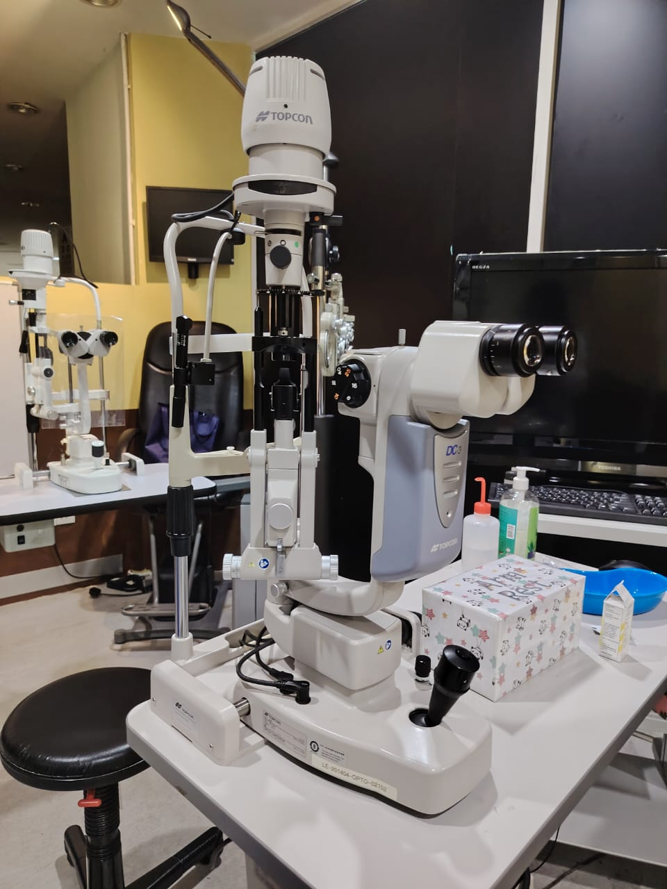
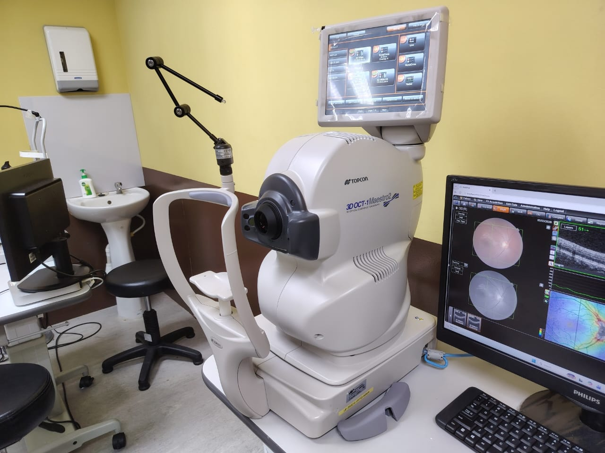
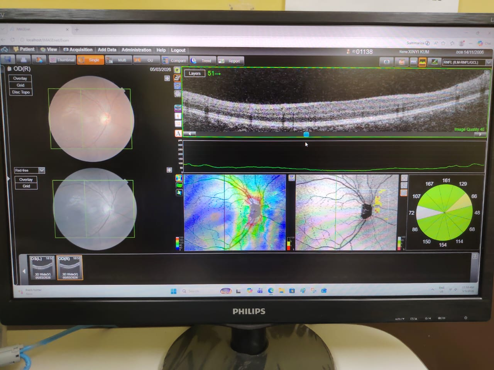
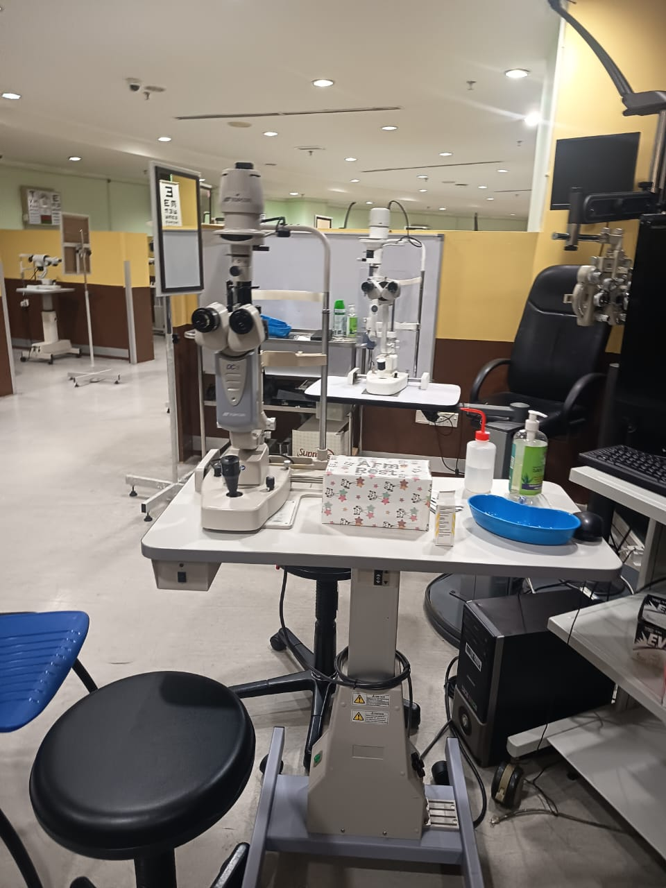
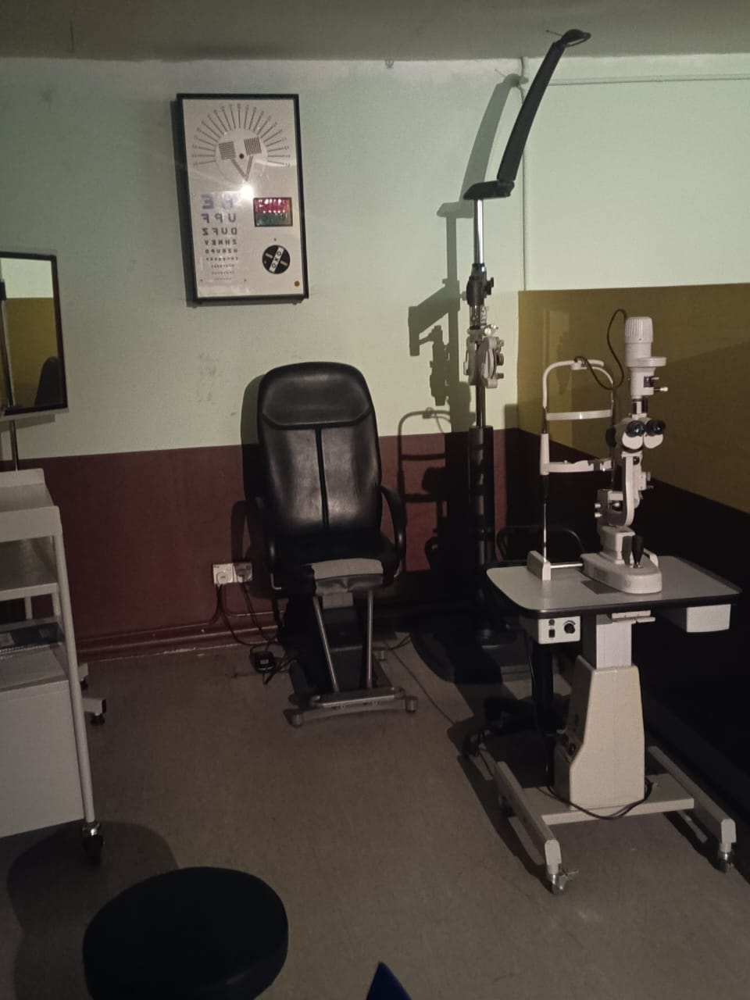

Future of Eye Care • SEGi University





The bachelor of optometry programme provides many strengths particularly going hand in hand with AI. Artificial intelligence is being involved in the optometry field with OCT (optical coherence tomography), and its retinal imaging allows it to enhance accuracy in detecting diseases such as glaucoma.
With the rise of AI in this industry, some may think that the industry market will decline; however, with the aging population and the increasing screen time of our youth, the industry continues to be in high demand as age-related eye conditions such as cataracts and the screen time-fatigue eye conditions such as myopia and dry eye syndrome increase.
Therefore, the strengths of optometry also show clearly that the community nowadays needs a complete and professional eye test to ensure optimal eye health, which increases high career opportunity for optometrists. Besides, according to the lecturer of optometry, he had high expectations for optometry, as nowadays the retail shops of optics had opened everywhere, and as an optometrist, retail shops are also career opportunities.
Employment for optometrists is expected to grow by 10% from 2021 to 2031, which is a higher average compared to other professions.
Despite the growing number of graduates, the Malaysian optometrist to population ratio stands at approximately 1:15,147, which is short of the World Council of Optometry's ideal ratio of 1:10,000.
However, the weakness of optometry is also quite evident. Optometry does not have a universally recognized certification for international practice. For example, in the accounting profession, individuals can use ACCA (Association of Chartered Certified Accountants) to apply for international jobs. In contrast, optometrists who wish to work abroad are required to obtain a license specific to each country.
This situation leads to highly competitive career opportunities in optometry because students are often limited to working in Malaysia.
Entering the bachelor of optometry opens several doors of opportunities for graduate students such as:
Graduates are able to be a part of many sectors of optometry:
Clinical training begins early, utilizing the on-campus "SEGi EyeCare" center and affiliated hospitals or clinics, providing hands-on experience with modern equipment.
The 4-year degree includes training in binocular vision, contact lenses, and ocular pathology.
Learning is facilitated by registered optometrists, ophthalmologists, and biomedical scientists, enhancing the clinical focus.
While the programme provides many opportunities, there are also many risks involved such as:
A wall that many optometrists face is the lack of public awareness regarding the difference between an optometrist (primary eye care professional) and an optician (dispenser of spectacles). This can lead to the undervaluation of clinical expertise in retail settings.
The rise of unregulated online cosmetic contact lens sales poses both a public health risk and a commercial threat to traditional practices. The upcoming Optometry Bill aims to regulate this, but digital competition remains strong.
While there is an overall shortage of optometrists in Malaysia (1:16,000 ratio vs. the WHO's ideal 1:10,000), most professionals are concentrated in urban areas, leading to high competition in cities and gaps in rural regions.
Optometrists often report a lack of adequate support and recognition from financial bodies and the government when trying to implement advanced Primary Eye Care (PEC) services in private practice.